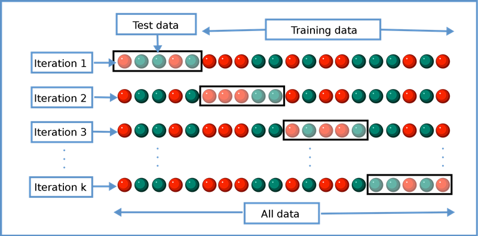

Chapter 4 Cross-validation
4.1 Read previously saved data
ObsData <- readRDS(file = "data/rhcAnalytic.RDS")
out.formula1 <- readRDS(file = "data/form1.RDS")4.2 k-fold cross-vaildation

k = 5
dim(ObsData)## [1] 5735 52set.seed(567)
# create folds (based on outcome)
folds <- createFolds(ObsData$Length.of.Stay, k = k,
list = TRUE, returnTrain = TRUE)
mode(folds)## [1] "list"dim(ObsData)*4/5 # approximate training data size## [1] 4588.0 41.6dim(ObsData)/5 # approximate test data size## [1] 1147.0 10.4length(folds[[1]])## [1] 4588length(folds[[5]])## [1] 4587str(folds[[1]])## int [1:4588] 1 2 4 6 7 8 9 10 11 13 ...str(folds[[5]])## int [1:4587] 1 3 5 6 7 8 10 11 12 13 ...4.2.1 Calculation for Fold 1
fold.index <- 1
fold1.train.ids <- folds[[fold.index]]
head(fold1.train.ids)## [1] 1 2 4 6 7 8fold1.train <- ObsData[fold1.train.ids,]
fold1.test <- ObsData[-fold1.train.ids,]
out.formula1## Length.of.Stay ~ Disease.category + Cancer + Cardiovascular +
## Congestive.HF + Dementia + Psychiatric + Pulmonary + Renal +
## Hepatic + GI.Bleed + Tumor + Immunosupperssion + Transfer.hx +
## MI + age + sex + edu + DASIndex + APACHE.score + Glasgow.Coma.Score +
## blood.pressure + WBC + Heart.rate + Respiratory.rate + Temperature +
## PaO2vs.FIO2 + Albumin + Hematocrit + Bilirubin + Creatinine +
## Sodium + Potassium + PaCo2 + PH + Weight + DNR.status + Medical.insurance +
## Respiratory.Diag + Cardiovascular.Diag + Neurological.Diag +
## Gastrointestinal.Diag + Renal.Diag + Metabolic.Diag + Hematologic.Diag +
## Sepsis.Diag + Trauma.Diag + Orthopedic.Diag + race + income +
## RHC.usemodel.fit <- lm(out.formula1, data = fold1.train)
predictions <- predict(model.fit,
newdata = fold1.test)
perform(new.data=fold1.test,
y.name = "Length.of.Stay",
model.fit=model.fit)## n p R2 adjR2 RMSE
## [1,] 1147 64 0.051 -0.004 24.864.2.2 Calculation for Fold 2
fold.index <- 2
fold1.train.ids <- folds[[fold.index]]
head(fold1.train.ids)## [1] 2 3 4 5 6 7fold1.train <- ObsData[fold1.train.ids,]
fold1.test <- ObsData[-fold1.train.ids,]
model.fit <- lm(out.formula1, data = fold1.train)
predictions <- predict(model.fit,
newdata = fold1.test)
perform(new.data=fold1.test,
y.name = "Length.of.Stay",
model.fit=model.fit)## n p R2 adjR2 RMSE
## [1,] 1147 64 0.066 0.011 24.7144.3 Using caret package to automate
# Using Caret package
set.seed(504)
# make a 5-fold CV
ctrl<-trainControl(method = "cv",number = 5)
# fit the model with formula = out.formula1
# use training method lm
fit.cv<-train(out.formula1, trControl = ctrl,
data = ObsData, method = "lm")
fit.cv## Linear Regression
##
## 5735 samples
## 50 predictor
##
## No pre-processing
## Resampling: Cross-Validated (5 fold)
## Summary of sample sizes: 4588, 4588, 4587, 4589, 4588
## Resampling results:
##
## RMSE Rsquared MAE
## 25.05478 0.05980578 15.19515
##
## Tuning parameter 'intercept' was held constant at a value of TRUE# extract results from each test data
summary.res <- fit.cv$resample
summary.res## RMSE Rsquared MAE Resample
## 1 22.45199 0.06463766 14.52080 Fold1
## 2 27.05869 0.06799916 15.29290 Fold2
## 3 27.65794 0.06034484 15.51895 Fold3
## 4 24.55357 0.03892546 15.47073 Fold4
## 5 23.55174 0.06712180 15.17238 Fold5mean(fit.cv$resample$Rsquared)## [1] 0.05980578sd(fit.cv$resample$Rsquared)## [1] 0.01204451mean(fit.cv$resample$RMSE)## [1] 25.05478sd(fit.cv$resample$RMSE)## [1] 2.240366